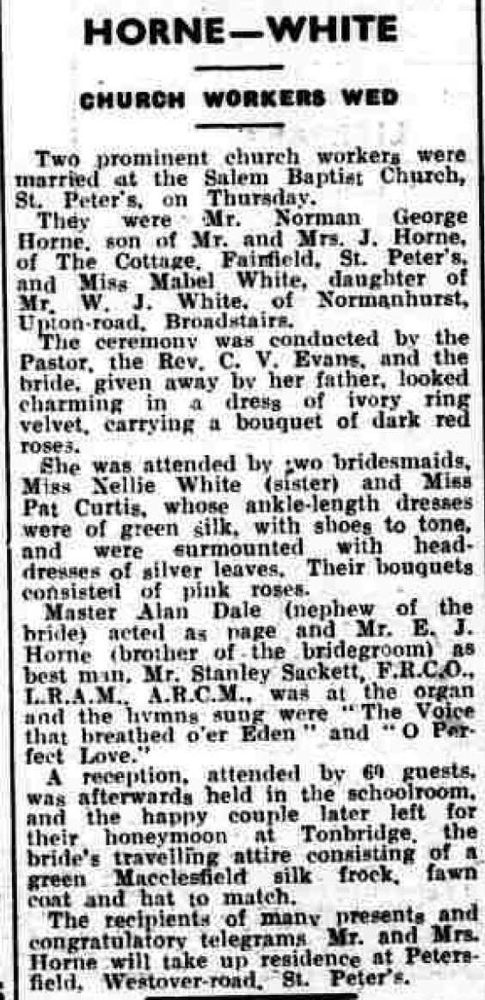

Mabel Horne (née White) 1911 - 2011
[ Home ] | [ Calendar ] | [ Surnames Index ] | [ Family History ]Mabel White, the wife of Norman George Horne (the first cousin twice-removed on the father's side of Nigel Horne), was born in Ramsgate, Kent, England on Jan 6, 1911<span class="citation">1,2,3</span> and. She married Norman (a painter & decorator with whom she had 2 surviving children <a href="I2091.html">Beryl C</a> and <a href="I2092.html">Margaret J</a>) at Salem Baptist Church, St Peters, Thanet, Kent, England on Aug 5, 1937<span class="citation">4</span>.</p><p>Throughout her life, she lived at her birthplace in 1937<span class="citation">5</span>; and on 8 Upton Road, Broadstairs, Kent on Sep 29, 1939<span class="citation">1</span>. <p>She died on Jul 17, 2011 in Margate, Kent.
Citations
- 1939 Register - Findmypast (was recorded at this address)
- England & Wales births 1837-2006 - Findmypast
- England & Wales, FreeBMD Birth Index, 1837-1915 Online publication - Provo, UT, USA: The Generations Network, Inc., 2006.Original data - General Register Office. England and Wales Civil Registration Indexes. London, England: General Register Office. © Crown copyright. Published by permission of the Cont
- England & Wales Marriages 1837-2005 - Findmypast
- British Newspaper Marriage Notices - Findmypast
Media
Thanet Advertiser - 10 August 1937

1939 Register Transcription - TNA-R39-1685-1685K-027-34
1939 Register Transcription - TNA-R39-1685-1685K-027-33
England & Wales marriages 1837-2005 - BMD/M/1937/3/AZ/001830/059
England & Wales births 1837-2006 - BMD/B/1911/1/AZ/001479/113
Family Tree

Generated by Ged2Site. Last updated on Jul 20, 2025